Note
Click here to download the full example code or to run this example in your browser via Binder
9.2.14. Visualizing 4D probabilistic atlas maps¶
This example shows how to visualize probabilistic atlases made of 4D images. There are 3 different display types:
“contours”, which means maps or ROIs are shown as contours delineated by colored lines.
“filled_contours”, maps are shown as contours same as above but with fillings inside the contours.
“continuous”, maps are shown as just color overlays.
A colorbar can optionally be added.
The nilearn.plotting.plot_prob_atlas function displays each map
with each different color which are picked randomly from the colormap
which is already defined.
See Plotting brain images for more information to know how to tune the parameters.
- 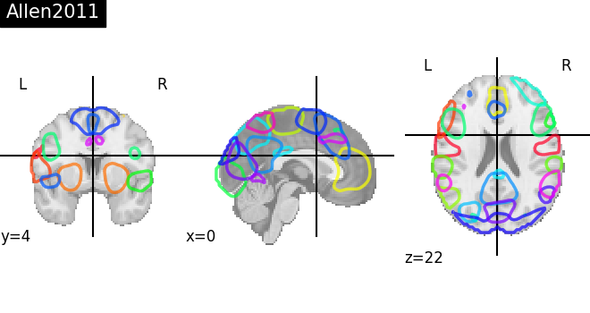
- 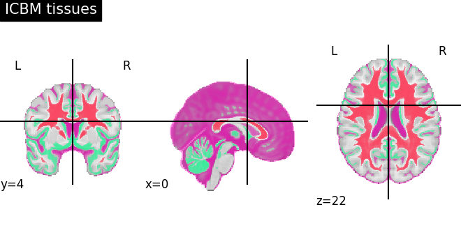
- 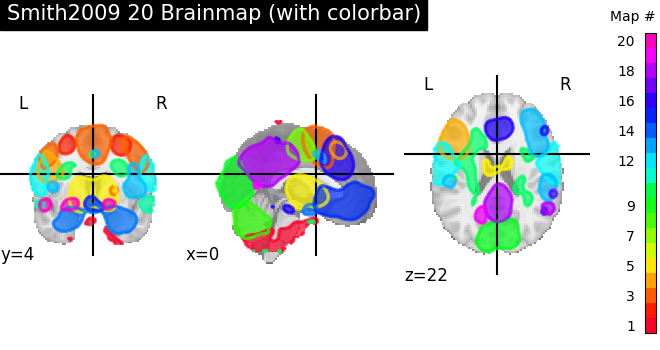
- 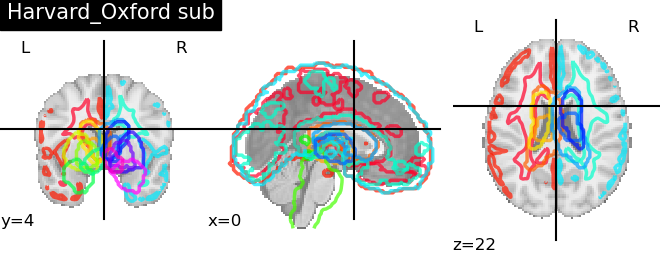
- 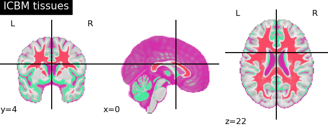
- 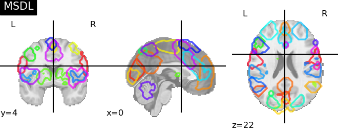
- 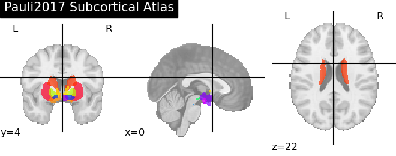
- 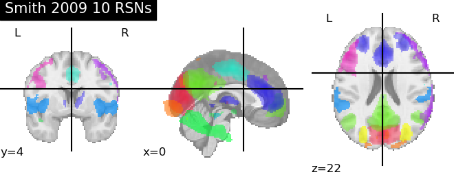
- 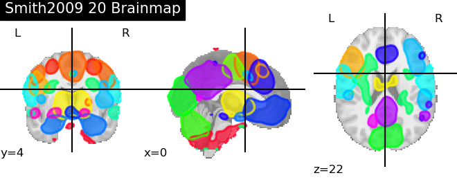
- 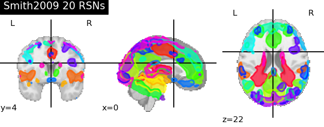
- 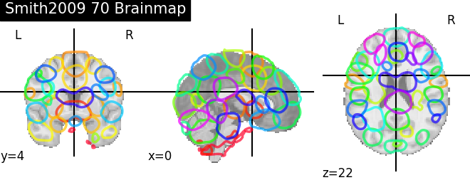
- 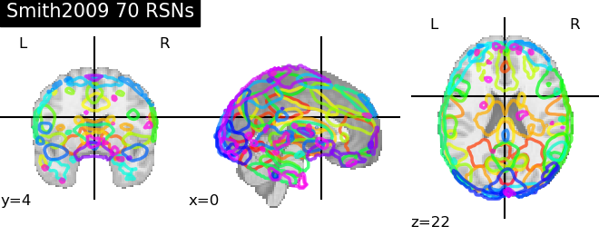
- 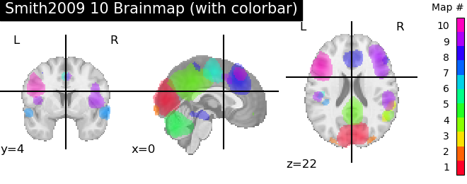
Out:
/home/circleci/miniconda3/envs/testenv/lib/python3.8/site-packages/numpy/lib/npyio.py:2405: VisibleDeprecationWarning: Reading unicode strings without specifying the encoding argument is deprecated. Set the encoding, use None for the system default.
output = genfromtxt(fname, **kwargs)
/home/circleci/miniconda3/envs/testenv/lib/python3.8/site-packages/numpy/lib/npyio.py:2405: VisibleDeprecationWarning: Reading unicode strings without specifying the encoding argument is deprecated. Set the encoding, use None for the system default.
output = genfromtxt(fname, **kwargs)
/home/circleci/project/nilearn/plotting/displays.py:101: UserWarning: No contour levels were found within the data range.
im = getattr(ax, type)(data_2d.copy(),
/home/circleci/project/nilearn/plotting/displays.py:101: UserWarning: No contour levels were found within the data range.
im = getattr(ax, type)(data_2d.copy(),
/home/circleci/miniconda3/envs/testenv/lib/python3.8/site-packages/numpy/ma/core.py:2825: UserWarning: Warning: converting a masked element to nan.
_data = np.array(data, dtype=dtype, copy=copy,
/home/circleci/project/nilearn/plotting/displays.py:101: UserWarning: linewidths is ignored by contourf
im = getattr(ax, type)(data_2d.copy(),
ready
# Load 4D probabilistic atlases
from nilearn import datasets
# Harvard Oxford Atlasf
harvard_oxford = datasets.fetch_atlas_harvard_oxford('cort-prob-2mm')
harvard_oxford_sub = datasets.fetch_atlas_harvard_oxford('sub-prob-2mm')
# Multi Subject Dictionary Learning Atlas
msdl = datasets.fetch_atlas_msdl()
# Smith ICA Atlas and Brain Maps 2009
smith = datasets.fetch_atlas_smith_2009()
# ICBM tissue probability
icbm = datasets.fetch_icbm152_2009()
# Allen RSN networks
allen = datasets.fetch_atlas_allen_2011()
# Pauli subcortical atlas
subcortex = datasets.fetch_atlas_pauli_2017()
# Dictionaries of Functional Modes (“DiFuMo”) atlas
dim = 64
res = 2
difumo = datasets.fetch_atlas_difumo(dimension=dim,
resolution_mm=res)
# Visualization
from nilearn import plotting
atlas_types = {'Harvard_Oxford': harvard_oxford.maps,
'Harvard_Oxford sub': harvard_oxford_sub.maps,
'MSDL': msdl.maps, 'Smith 2009 10 RSNs': smith.rsn10,
'Smith2009 20 RSNs': smith.rsn20,
'Smith2009 70 RSNs': smith.rsn70,
'Smith2009 20 Brainmap': smith.bm20,
'Smith2009 70 Brainmap': smith.bm70,
'ICBM tissues': (icbm['wm'], icbm['gm'], icbm['csf']),
'Allen2011': allen.rsn28,
'Pauli2017 Subcortical Atlas': subcortex.maps,
'DiFuMo dimension {0} resolution {1}'.format(dim, res): difumo.maps,
}
for name, atlas in sorted(atlas_types.items()):
plotting.plot_prob_atlas(atlas, title=name)
# An optional colorbar can be set
plotting.plot_prob_atlas(smith.bm10, title='Smith2009 10 Brainmap (with'
' colorbar)',
colorbar=True)
print('ready')
plotting.show()
Total running time of the script: ( 3 minutes 23.678 seconds)